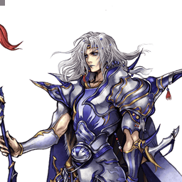

Final Fantasy IV
Cecil Harvey
Punisher à deux jobs : Dark Knight au sol, Paladin dans les airs
Position dans la méta
Tier C 27ᵉ sur 30 — tier list tournoi 2017 de dissidia.wiki (moitié valeurs de matchups, moitié avis de joueurs experts).
Vue d'ensemble
Cecil Harvey est un personnage de close / mid-range qui fonctionne avec deux jobs distincts : Dark Knight, axé sur le combat au sol et le wall rush, et Paladin, axé sur le combat aérien et un moveset plus équilibré. C'est pratiquement deux personnages en un, et il peut changer de job à volonté — mais ce changement passe par des HP attacks spécifiques, une arme à double tranchant : ses HP attacks sont corrects en neutral et en punish, mais pour la plupart télégraphés et à long recovery. Cecil s'adapte donc à beaucoup de situations, au prix d'un risque inhérent chaque fois qu'il veut accéder à un job précis.
Cecil n'est bâti ni pour l'offense pure ni pour une défense de fer : il excelle comme punisher. Beaucoup de ses coups ont une bonne allonge, verticale ou latérale, et il punit efficacement les whiffs adverses avec les deux jobs selon le matchup. Il dispose de plusieurs routes de combo solo, qu'il peut préparer avec assist selon qu'il vise les dégâts ou l'EX.
Ses difficultés : une frame data sous la moyenne (startups longs, animations longues, fenêtres de cancel tardives), qui rend dangereux le remplissage de la jauge d'assist au whiff — une faiblesse fondamentale en compétitif qui l'expose aux whiff punishes comme aux assist punishes. Son tracking capricieux crée des inconstances pour punir les dodges, voire simplement toucher un adversaire mobile, et ses projectiles, lents et/ou à faible priorité, limitent son zoning.
En compétitif, Cecil est généralement classé bottom / low tier. Son job system le contraint d'une façon que les autres personnages connaissent rarement : bons pokes au sol mais aucun poke aérien solide, sans pouvoir imposer le combat au sol pour compenser. Spécialiste du sol ou de l'air selon le job, il n'est pourtant considéré comme le plus fort dans aucun des deux registres, et prend souvent des risques élevés pour une récompense moindre. Il reste néanmoins capable de capitaliser efficacement sur les touches propres avec assist quand l'occasion se présente.
Forces
- Bon poking et burst damage en Dark Knight.
- Bonne génération d'EX en Paladin.
- Whiff punishment : plusieurs coups adaptés à la punition d'attaques manquées sous différents angles, comme Valiant Blow, Shadow Bringer et Sacred Cross.
- Combos solo à gros dégâts bravery, capables d'enchaîner dans des HP attacks.
Faiblesses
- Aucun poke aérien sûr : plus vulnérable au whiff punishment en moyenne, et remplissage de la jauge d'assist difficile et risqué.
- Starters de combo solo situationnels, qui limitent les occasions d'exploiter ses routes de combo.
- Zoning médiocre : projectiles télégraphés à bonne récompense sur hit mais difficiles à placer en neutral.
- Le changement de job exige en général des attaques télégraphées qui exposent aux punishes.
- Dilemme des jobs : se spécialiser dans un job impose toujours des compromis notables, et il ne peut pas s'appuyer sur un seul job dans les grands stages.
Stats & vitesses
| Nom | Cecil Harvey (セシル・ハーヴィ) |
|---|---|
| Jeu d'origine | Final Fantasy IV |
| ATK de base (LV100) | 109 (Low / +2 as Dark Knight, High) |
| DEF de base (LV100) | 111 (Average / +2 as Paladin, Very High) |
| Vitesse de course | 9 (Dark Knight, Slow) 5 (Paladin, Above Average) |
| Vitesse de dash | 81 (Dark Knight, Below Average)77 (Paladin, Average / Good) |
| Vitesse de chute | 81 (Dark Knight, Average) 89 (Paladin, Below Average) |
| Chute après esquive | 39 (Dark Knight, Average) 40 (Paladin, Average) |
| BRV la plus rapide | 15F (Valiant Blow) |
| HP la plus rapide | 13F (Shadow Bringer) |
| HP en 1 coup | Dark Flame Luminous Shard |
| HP links | Yes (Combos only) |
| Command block | No |
| Armes | Axes, Greatswords, Swords |
| Armures | Gauntlets, Heavy Armor, Helms, Light Armor, Shields |
| Armes exclusives | Dark Sword, Mythgraven Blade, Lustrous SwordLightbringer, Cimmerian Edge |
| Unlock | Default |
| Camp | Cosmos |
| Doubleur (JP) | Shizuma Hodoshima |
| Doubleur (ENG) | Yuri Lowenthal |
Point or : ce personnage · petits points : le reste du cast · trait violet : moyenne. Valeurs du wiki, plus bas = plus rapide ; le rang à droite se lit directement (1ᵉʳ = le plus rapide).
Coups
Barre plus courte = coup plus rapide. Startup en frames (60 i/s, données dissidia.wiki), priorité indiquée après la valeur. Les coups marqués ★ sont les plus rapides du kit — ce sont en général vos meilleurs outils de punish et de pression.
Braveries
Au sol
Slash Melee Low
Bravery Paladin à deux hits, précieuse pour sa récompense : 20 de base, 90 d'EX, et surtout des cancels en attaque ou en dash sur hit — rarissime hors dash feint et EX Revenge. Elle ouvre les combos Paladin les plus pratiques au sol (Radiant Wings, Sacred Cross, voire Paladin Force au mur) et le dash cancel avec Free Air Dash remplit la jauge d'assist via Assist Gauge Up Dash. En revanche, portée et précision limitées (mouvement diagonal fixe, aucun tracking, 23F) : à réserver aux punitions de block stagger et de whiffs lents plutôt qu'au poke.
| Dégâts de base | 20 (10, 10) |
|---|---|
| Startup | 23F |
| Type | Physical |
| Priorité | Melee Low |
| EX Force | 90 |
| Effets | Chase |
| Cancels | A missed attack that doesn't make any contact. )Attack or Dash (On Hit) |
| CP (maîtrisé) | 20 (10) |
Lightning Rise Melee Mid (first half) Melee Low (second half)
Charge au sol Melee Mid sur sa première moitié : mixup télégraphé contre le block sur hard read, convertible en HP via Chase avec Aerith assist, et capable de bloquer les attaques Ranged Low (Thunder Barret de Squall) jusqu'à l'activation. Startup long (43F) et animation longue : ni un outil central de mixup ni une défense fiable ; son rôle de punisher et de gap closer est surclassé par d'autres coups. Cecil devient aérien pendant ce coup.
| Dégâts de base | 30 (3, 3, 5, 4, 4, 11) |
|---|---|
| Startup | 43F |
| Type | Physical |
| Priorité | Melee Mid (first half) Melee Low (second half) |
| EX Force | 90 |
| Effets | Chase, Block (Ranged Low) |
| CP (maîtrisé) | 20 (10) |
Dark Step Melee Low
Attaque en deux temps qui fait passer en Dark Knight dès la confirmation du follow-up. Bons chiffres (90 EX), mais la faible précision héritée de Slash et la concurrence de Shadow Bringer / Dark Flame pour changer de job en font un coup marginal en neutral ; le follow-up peut se finir même sur un miss, gimmick situationnel.
| Dégâts de base | 27 (5, 10, 1 x 2, 10) |
|---|---|
| Startup | 23F |
| Type | Physical |
| Priorité | Melee Low |
| EX Force | 90 |
| Effets | Chase, Job Change |
| CP (maîtrisé) | 20 (10) |
En l’air
Radiant Wings Melee Low
L'une des braveries principales du Paladin et ce qui se rapproche le plus d'un poke aérien chez Cecil : 19F, avance avant de frapper, gros dégâts avec assist grâce au Wall Rush, starter de combo assist et bon punish de whiffs et de block staggers. Aucun tracking une fois lancé, mouvement linéaire et trois slashes obligatoires avant tout dodge cancel : les whiffs coûtent cher. Utilisé en lock off, il part dans la direction du regard et permet de construire la jauge d'assist un peu plus sereinement.
| Dégâts de base | 40 (3, 3, 7, 6, 6, 6, 9) |
|---|---|
| Startup | 19F |
| Type | Physical |
| Priorité | Melee Low |
| EX Force | 30 |
| Effets | Wall Rush |
| Cancels | Dodge |
| CP (maîtrisé) | 20 (10) |
Sacred Cross Melee Low
Punish vertical du Paladin (21F, 90 EX) : Cecil rejoint l'adversaire et frappe vers le haut ou le bas selon les positions, avec un peu d'évasion intégrée. Récompense faible sans Aerith assist ni wall rush au sol, hit stun court (peu utile en empty chase et sur EX Core), et l'animation va au bout même sur un miss : pas un poke aérien sûr, l'assist punish guette et le dernier hit peut rater si la position est mal jugée.
| Dégâts de base | 30 (3 x 5, 5, 10) |
|---|---|
| Startup | 21F |
| Type | Physical |
| Priorité | Melee Low |
| EX Force | 90 |
| Effets | Chase |
| Cancels | Dodge |
| CP (maîtrisé) | 20 (10) |
Searchlight Ranged Low
Projectile longue distance (95F) : l'orbe se place sur l'adversaire puis tire trois projectiles à bon hit stun, ouvrant des combos (Radiant Wings, Sacred Cross) et activant le hit glitch pour Radiant Wings et Paladin Force. C'est son outil de prédilection pour occuper l'espace aérien à distance, mais il est très télégraphé, laisse Cecil totalement vulnérable pendant l'animation, ne corrige pas sa trajectoire, et l'orbe peut disparaître au contact des murs, piliers et plafonds.
| Dégâts de base | 15 (3 x 5) |
|---|---|
| Startup | 95F |
| Type | Magical |
| Priorité | Ranged Low |
| EX Force | 0 |
| Cancels | Dodge |
| CP (maîtrisé) | 20 (10) |
Attaques HP
Au sol
Soul Eater Melee High
Punish au sol du Dark Knight (39F) contre dodges et block staggers, avec bon knockback latéral vers wall rush et capacité à passer au travers des coups à faible priorité une fois le contact établi. Réactable, sans couverture au-dessus de lui, et globalement surclassé par Shadow Bringer quand ce dernier est équipé.
| Dégâts de base | 20 (4, 2 x 5, 6) |
|---|---|
| Startup | 39F |
| Type | Physical |
| Priorité | Melee High |
| EX Force | 30 |
| Effets | Wall Rush |
| Cancels | Dodge |
| CP (maîtrisé) | 30 (15) |
Dark Flame Ranged High
Zoning du Dark Knight : flammes à forte priorité qui occupent l'espace quelques secondes, traquent bien au-dessus de lui et servent d'anti-air contre les approches aériennes ; Auto Assist Lock On le protège des assists lents pendant l'animation. Envoie l'adversaire vers le haut, avec wall rush exploitable dans les stages à plafond bas (Pandaemonium - Top Floor, M.S. Prima Vista). Lent au startup comme en déplacement : inefficace contre le recul et le zoning adverse à distance, et un petit temps de vulnérabilité subsiste face aux assists sol rapides comme Jecht Rush.
| Startup | 53F |
|---|---|
| Priorité | Ranged High |
| EX Force | 0 |
| Effets | Wall Rush |
| Cancels | Dodge |
| CP (maîtrisé) | 30 (15) |
Shadow Bringer Melee High
L'un des coups les plus forts du Dark Knight : 13F, unreactable, anti-air, très fort knockback diagonal vers wall rush, et dodge cancel assez rapide pour servir de poke honoraire. Il surclasse Soul Eater (allonge verticale, sécurité, combos assist) et ajoute un passif +3 % de dégâts BRV en Dark Knight (-3 % en Paladin). L'équiper désactive Luminous Shard côté Paladin ; le recovery reste punissable et la portée dépend d'un ground dash préalable.
| Dégâts de base | 20 (10, 10) |
|---|---|
| Startup | 13F |
| Type | Physical |
| Priorité | Melee High |
| EX Force | 30 |
| Effets | Wall Rush Dark Knight BRV damage +3% Paladin BRV damage -3% |
| Cancels | Dodge |
| CP (maîtrisé) | 30 (15) |
En l’air
Saint's Fall Melee High
Gap closer engagé (53F) : callout dur contre whiffs et blocks à distance, actif pendant la charge, wall rush au sol pour les combos assist. Arc de déplacement fixe, faible allonge, animation complète même sur un miss : risqué en neutral et surclassé par Paladin Force.
| Dégâts de base | 10 (1 x 3, 2, 1 x 2, 3) |
|---|---|
| Startup | 53F |
| Type | Physical |
| Priorité | Melee High |
| EX Force | 30 |
| Effets | Wall Rush |
| Cancels | Dodge |
| CP (maîtrisé) | 30 (15) |
Paladin Force Ranged High (first hit) Melee High (other hits)
HP aérien principal du Paladin pour les punishes et combos assist : un projectile qui, s'il touche, déclenche un combo aérien à bon homing conclu par un ground wall rush. Visée verticale possible au startup pour attraper les dodges au-dessus de lui, et après Searchlight le hit glitch permet d'attaquer vite de très loin — Cecil est l'un des rares à bien exploiter ce glitch. Une fois le combo lancé, aucun cancel possible : LV1/LV2 Assist Change adverses créent des fenêtres de punition (sauf au plafond), et un trade sur le seul projectile peut ouvrir un autre follow-up avec du savoir-faire de matchup.
| Dégâts de base | 15 (2 x 5, 5) |
|---|---|
| Startup | 43F |
| Type | Both |
| Priorité | Ranged High (first hit) Melee High (other hits) |
| EX Force | 30 |
| Effets | Wall Rush |
| Cancels | Dodge |
| CP (maîtrisé) | 30 (15) |
Luminous Shard Ranged High
Seul HP en un coup et seul projectile HP aérien du Paladin : zoning secondaire et ender de combo plus sûr contre les staggers du LV2 Assist Change, avec 60 EX. Longue portée et trajectoire verticale ajustable ; en 1-hit HP, il peut contourner les checkmates d'EX Revenge sur stagger. Frame data lente (63F) et faible potentiel de dégâts sans setup d'assist ; l'équiper désactive Shadow Bringer, un arbitrage entre jeu au sol et sécurité aérienne en combo.
| Startup | 63F |
|---|---|
| Priorité | Ranged High |
| EX Force | 60 |
| Effets | Paladin BRV damage +3% Dark Knight BRV damage -3% |
| Cancels | Dodge |
| CP (maîtrisé) | 30 (15) |
EX Mode: Job Augment! & EX Burst
EX Mode « Job Augment! » : Regen, Critical Boost, Proteus et Inner Strength. L'EX Mode augmente le damage output global via les critiques et Inner Strength (chaque attaque à 1,5 fois sa puissance), et Proteus [R + Square] permet de changer de job instantanément sans attaquer, dès que Cecil n'est pas en état d'attaque (course, dash, dodge), sans cooldown et répétable en succession rapide.
C'est un gain majeur : plus besoin de s'engager dans des HP attacks télégraphés pour accéder à l'autre job, et Proteus joue un rôle crucial dans le loop des Paladin Arts en combo — Cecil peut ainsi comboter dans Paladin Arts depuis Dark Knight hors état d'attaque. Attention, ses stats (dont la vitesse de course) diffèrent toujours selon le job. L'ensemble agit comme une récompense de long terme des combos Paladin et des EX Cores.
EX Burst : Face Shift : trois combinaisons simultanées d-pad + bouton à saisir en environ 3,5 secondes, lues de gauche à droite des deux côtés de l'écran ; un échec complet aboutit au finisher faible « Darkness » qui laisse Cecil en Dark Knight. Dégâts globalement moyens, fluctuants selon les changements de job et le bonus d'ATK passif du Dark Knight.
Mécanique unique
Le job system : Cecil possède deux jobs aux movesets radicalement différents — Dark Knight, tourné vers le combat au sol, et Paladin, tourné vers le combat aérien. Chaque job a ses propres braveries au sol et en l'air, tandis que les HP attacks sont communs. Un seul job est actif à la fois, et on en change en utilisant des attaques précises : les HP attacks au sol ou Dark Step (pendant Paladin) font passer en Dark Knight ; les HP attacks aériens ou Paladin Arts (pendant Dark Knight) font passer en Paladin. Chacune de ces attaques doit être équipée pour permettre le changement.
Cecil commence chaque combat en Dark Knight : accéder aux coups du Paladin impose donc de s'engager dans des attaques spécifiques, une proposition risquée vu la longueur de ses whiffs, mais incontournable. En EX Mode, Proteus (R + Square) lève cette contrainte en autorisant le changement de job libre sans attaquer.
- Certains équipements modifient les stats dans un job précis : Cimmerian Edge (ATK +1 en Dark Knight) et Lightbringer (DEF +1 en Paladin).
- Dissidia 012 ajoute deux HP attacks : Shadow Bringer (Dark Knight) et Luminous Shard (Paladin), mutuellement exclusifs — équiper l'un désactive l'autre.
- En compétitif, Cecil se spécialise généralement dans un seul job.
Plan de jeu & techniques avancées
Jouez Cecil comme un punisher : beaucoup de ses coups ont une bonne allonge verticale ou latérale (Valiant Blow, Shadow Bringer et Sacred Cross pour punir sous différents angles), et sa récompense vient des touches propres converties avec assist. En Dark Knight, tenez le sol avec vos pokes (Shadow Bringer en tête, quasi-poke à 13F) et l'anti-air Dark Flame ; en Paladin, Radiant Wings sert de quasi-poke aérien, Sacred Cross de punish vertical et Searchlight d'occupation d'espace à distance.
Les combos structurent le plan de jeu : en Dark Knight, Dark Cannon ouvre sur Valiant Blow ou Shadow Bringer / Soul Eater, et les conversions assist partent du wall rush ou de la première partie de Valiant Blow (Jecht est idéal pour les dégâts et les setups Dark Cannon en restant au sol). En Paladin, Slash (cancel en Free Air Dash) mène à Radiant Wings pour les dégâts ou Sacred Cross pour l'EX, Searchlight > Paladin Force forme un combo HP solo, et Aerith assist convertit Sacred Cross en HP via chase. Les starters les plus fiables (Dark Cannon, Searchlight) étant des projectiles télégraphés à faible priorité, l'assist fiabilise l'ensemble.
Gérez le risque du job system : chaque changement de job hors EX Mode passe par une attaque télégraphée, donc choisissez votre spécialisation selon le stage et le matchup — sachant qu'on ne peut pas s'appuyer sur un seul job dans les grands stages. Votre frame data lente rend le remplissage de la jauge d'assist au whiff dangereux : le lock off de Radiant Wings et le dash cancel de Slash sont vos options les moins exposées. L'EX Mode (Proteus + Inner Strength) est la récompense de long terme qui lève la contrainte des jobs : capitalisez sur les combos Paladin générateurs d'EX et les EX Cores pour y accéder.
Techniques spécifiques
Hit glitch (Searchlight)
Après un Searchlight qui touche, le hit glitch s'active pour Radiant Wings et Paladin Force : Paladin Force fond alors sur l'adversaire depuis de longues distances avec un tracking largement supérieur. Cecil est l'un des rares personnages à bien exploiter ce glitch, et cela améliore directement son jeu Paladin.
Slash dash cancel
Slash peut être cancel en dash sur hit — une propriété rare hors dash feints et EX Revenge. Avec Free Air Dash, cela enchaîne sur Radiant Wings ou Sacred Cross et remplit la jauge d'assist via Assist Gauge Up Dash.
Lock off Radiant Wings
Utilisé en lock off, Radiant Wings part dans la direction du regard de Cecil : un moyen de construire la jauge d'assist un peu plus sûrement, l'adversaire ne pouvant plus dash dans Cecil et bloquer aussi facilement.
Combos documentés (notation d'origine, dissidia.wiki)
Main article: Cecil (Combos)
Cecil has a couple solo combo starters with both jobs, which can lead to bravery and HP follow-ups alike. Most of his attacks can be used as follow-ups, so Cecil has rather flexible combo routing. Cecil's most reliable starters (Dark Cannon & Searchlight) are telegraphed low priority projectiles, so he may need assist to do these combos more consistently. With assists, Cecil can get damage from unfinished attacks and wall rushes as well.
Dark Knight can combo with either Dark Cannon or Paladin Arts. Dark Cannon leads to other Dark Knight melee attacks, while Paladin Arts leads to Paladin attacks. Cecil gets decent damage with Dark Cannon starters, but its low damage can vary due to how projectiles move. On average, Dark Cannon can deal four hits (3x3, 3 / 9 total).
Cecil's combos expand considerably with Slash and Searchlight. Slash provides a few good Paladin combos on the ground. Searchlight also supports both jobs (and in EX Mode), and Cecil can do more if the opponent is on the ground. With Searchlight, Cecil can also go for the hit glitch with Paladin Force as means to do HP damage in the neutral.
Dark Knight Cecil can convert off of wall rush or with first part of Valiant Blow. Jecht assist is good for damage and Dark Cannon setups, and Cecil can stay on ground.
Main article: Cecil Combos (Aerith Assist)
Paladin Cecil uses wall rush and chase to set up HP damage with Aerith assist. If Cecil gets a ground wall rush, he can go for Slash combos to get even more bravery with Searchlight routes or EX with Sacred Cross.
Techniques universelles (blodge, dash feint, lock off, dodge punishment) : voir la page Techniques & glitches.
Matchups
Vidéos de matchs : Replay Theater — matchs de Cecil Harvey.
Builds
Deux builds sont documentés, Equip Glitch assumé pour le coût CP. Le build « Side by Side (Dark Knight) » : base bravery élevée (1623 BRV), assist Jecht / Sephiroth / Yuna, invocation Rubicante, Piggy's Stick / Chainsaw / Thornlet / Maximillian, boosters (Sniper Eye, Dismay Shock, Battle Hammer, BRV = 0, Empty EX Gauge, Pre-EX Mode, Pre-EX Revenge) plus Blue Gem, Miracle Shoes et Side by Side, pour un Max Booster x3.8.
Le build « Hybrid (Paladin) » : set Lufenian complet + Cleaver (effet spécial Judgment of Lufenia), assist Kuja / Aerith, 956 BRV (1147 avec First to Victory), accessoires Hyper Ring, Muscle Belt, Dismay Shock et boosters conditionnels (Summon Unused, Pre-EX Mode, Pre-EX Revenge, Opponent Summon Unused), White Gem, Tenacious Attacker et First to Victory, Max Booster x3.0.
| Stats | |
|---|---|
| HP | 9883 |
| CP | 450 |
| BRV | 1623 |
| ATK | 176 |
| DEF | 182 |
| LUK | 61 |
| Max Booster | x3.8 |
| Equipment | |
|---|---|
| Assist | Jecht / Sephiroth / Yuna |
| Weapon | Piggy's Stick |
| Hand | Chainsaw |
| Head | Thornlet |
| Body | Maximillian |
| Accessory 1 | Sniper Eye |
| Accessory 2 | Dismay Shock |
| Accessory 3 | Battle Hammer |
| Accessory 4 | BRV = 0 |
| Accessory 5 | Empty EX Gauge |
| Accessory 6 | Pre-EX Mode |
| Accessory 7 | Pre-EX Revenge |
| Accessory 8 | Blue Gem |
| Accessory 9 | Miracle Shoes |
| Accessory 10 | Side by Side |
| Summon | Rubicante |
| Bravery attacks | |
|---|---|
| Ground | Aerial |
| HP attacks | |
| Ground | Aerial |
| Stats | |
|---|---|
| HP | 10299 |
| CP | 450 |
| BRV | 956 (1147 with First to Victory) |
| ATK | 178 |
| DEF | 183 |
| LUK | 60 |
| Max Booster | x3.0 |
| Equipment | |
|---|---|
| Assist | Kuja / Aerith |
| Weapon | Cleaver |
| Hand | Lufenian Shield |
| Head | Lufenian Helm |
| Body | Lufenian Armor |
| Accessory 1 | Hyper Ring |
| Accessory 2 | Muscle Belt |
| Accessory 3 | Dismay Shock |
| Accessory 4 | Summon Unused |
| Accessory 5 | Pre-EX Mode |
| Accessory 6 | Pre-EX Revenge |
| Accessory 7 | Opponent Summon Unused |
| Accessory 8 | White Gem |
| Accessory 9 | Tenacious Attacker |
| Accessory 10 | First to Victory |
| Summon | Rubicante |
| Bravery attacks | |
|---|---|
| Ground | Aerial |
| HP attacks | |
| Ground | Aerial |
Substitutions documentées : côté Dark Knight, Blue Gem et Miracle Shoes peuvent céder la place à Together as One, Hero's Seal ou Back-Breaking Straw (pour compenser les malus de Thornlet), et les boosters « Grounded » et « BRV = 0 » gonflent les dégâts de HP wall rush au prix d'une base bravery plus basse. Côté Paladin, Muscle Belt et « Opponent Summon Unused » sont librement remplaçables, Tenacious Attacker n'est pas indispensable avec Aerith assist, Hero's Essence peut fournir des extra abilities (taux de critique) et Winged Boots est utile dans les stages à banish trap.
Synergies d'assist
Cecil Harvey en tant qu'assist
Cecil est classé Mid dans la tier list assist (Muggshotter) ; le wiki ne fournit pas d'évaluation rédigée de son rôle d'assist, seulement ses données : Shadow Lance (BRV sol, 35F, Wall Rush, jusqu'à 50 de base), Radiant Wings (BRV air, 19F, Wall Rush), Soul Eater (HP sol, 39F, Wall Rush) et Saint's Fall (HP air, 53F, Wall Rush).
Assists recommandées
- Jecht — Pour le Dark Knight : whiff punishes rapides, conversions sur les coups clés et le wall rush, setups de combos solo, et retour en Dark Knight depuis Paladin sur hit au sein d'un combo.
- Sephiroth — Pour le Dark Knight : whiff punishes et surtout des knockback cancels faciles — avec de la jauge, Cecil n'a plus à dépendre des wall rushes pour convertir en assist.
- Yuna — Pour les deux jobs : priorité Ranged Low non staggered par le LV2 Assist Change, conversions sur les coups clés et le wall rush, efficace dans la range de Cecil en petits stages et près du sol.
- Aerith — Pour le Paladin : convertit Sacred Cross en HP en initiant un chase (sans déplétion d'EX sur hit), met en place des combos solo n'importe où et combote sûrement dans Luminous Shard sans stagger du LV2 Assist Change.
- Tidus — Pour le Paladin : le whiff punisher aérien le plus rapide, moins de potentiel de combo aérien mais son assist au sol peut wall rush pour des combos solo étendus.
Tech communautaire
Sources
- https://dissidia.wiki/Cecil_Harvey_(Dissidia_012)
- https://dissidia.wiki/Tier_List_(Dissidia_012)
- https://dissidia.wiki/Tier_List_(Assist)
Limites connues
- La page Matchups du wiki est une ébauche (stub) et l'overview ne contient pas d'analyse exploitable par matchup : section matchups laissée à null.
- Le moveset bravery documenté est incomplet (6 coups détaillés seulement) : Valiant Blow, Dark Cannon, Paladin Arts et Shadow Lance apparaissent dans l'infobox, les combos ou les données d'assist sans fiche de coup détaillée.
- Aucune évaluation rédigée de Cecil en tant qu'assist : seuls la table de données et le classement Mid de la meta sont disponibles.
- Dans les tables de combos, les valeurs « Opponent Assist (Comrade's Vow) » sont notées « ??? » et certains gains d'EX sont partiels.
- Le gain de jauge d'assist par coup n'est pas renseigné (colonnes vides).
- La section References est vide : aucune tech communautaire attribuable ou datée.